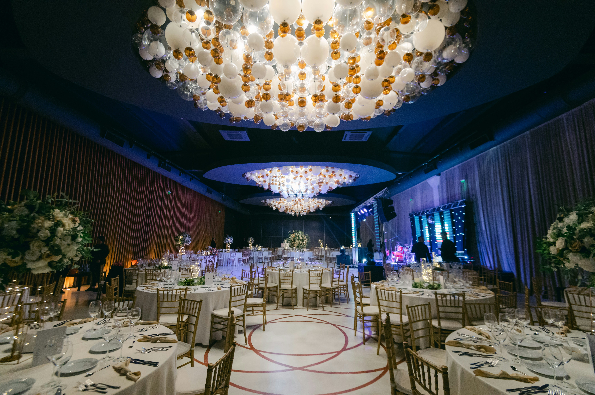
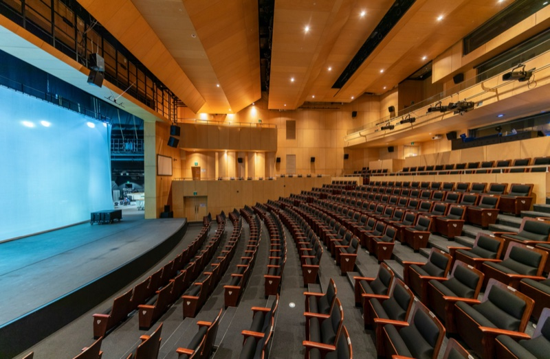

Ещё один источник запросов на выступления
Дополните привычные способы поиска заказов профилем в каталоге для организаторов мероприятий. Ваша программа сможет попасть в поле зрения тех, с кем вы ещё не работали.
Музыкантам, ведущим, артистам и творческим коллективам
Бесплатно разместите профиль на МАЙСЛИСТ. Добавьте информацию о себе и своей программе, сопроводите ее фотографиями и видео. Это поможет организаторам познакомиться с вашей работой и выбрать вас для выступления на корпоративе или личном празднике.
Используйте МАЙСЛИСТ как ещё один источник приглашений — наряду с рекомендациями, соцсетями и постоянными заказчиками. Программу, гонорар и все прочие условия вы или ваш представитель обсуждаете с организатором напрямую по электронной почте.
Размещение профиля бесплатно. При регистрации выберите тип профиля «Поставщик», затем подходящую категорию в разделе «Артисты».
Организатору важно понять и почувствовать, кого он приглашает: увидеть сценический образ, манеру выступления и общения с залом, реакцию аудитории. При выборе музыкантов очень важно не только описание, но и возможность услышать живое исполнение.
Обязательно добавляйте фотографии и видео, которые представляют вас исчерпывающе. Расскажите, что отличает вашу программу, для каких событий она подходит и что важно сохранить при её включении в мероприятие. Можете разместить короткую видео-визитку — это повышает шансы получить заказ.
Если вы работаете в нескольких составах или предлагаете разные программы, объясните различия. Камерное выступление, полноценный концерт, ведение вечера и короткий сценический номер требуют разного представления. Если они сильно различаются — добавьте несколько разных карточек в перечень своих услуг.
Подбирают программу под концепцию события и аудиторию заказчика. Им важно увидеть вашу работу, иметь возможность представить её клиенту, понять условия приглашения. В переписке вы можете уточнить, какую компанию представляет агентство, кто будет среди гостей и какое место выступление займёт в программе.
Готовят встречи партнёров, юбилеи компаний, приёмы и корпоративные вечера. Уточните, для кого проводится событие: для сотрудников, клиентов, руководителей или приглашённого профессионального сообщества. Это поможет оценить, подходит ли вам формат и чего ждут от программы.

Собирают программу, работают со сценой и технической командой. Обсудите роль вашего выступления, порядок выходов, репетицию, звук, свет и условия работы за сценой.

Подбирают артистов для свадеб, юбилеев и закрытых вечеров. Познакомьтесь с замыслом события, узнайте о гостях, площадке и пожеланиях заказчика, прежде чем предлагать программу и соглашаться назначать цену.

Зарегистрируйтесь через тип профиля «Поставщик» и выберите категорию в разделе «Артисты». Укажите имя или название коллектива.
Расскажите о себе и своем опыте, подготовьте фотографии и ссылки на видео. Обозначьте доступные форматы, состав, продолжительность и возможность выезда. Основные условия, от которых зависит ваше участие, укажите в описании.
Организатор знакомится с вашим предложением и отправляет запрос на конкретные даты. Это начало разговора: вы можете уточнить задачу, аудиторию и условия. Старайтесь не медлить с первым ответом — на МАЙСЛИСТ работают event-менеджеры, им важно понять, открыты ли вы к предложениям в принципе и добавить вас в планы мероприятия и черновики смет.
В переписке узнайте о заказчике, гостях, программе и площадке. Запросите материалы, которые помогут принять решение: описание события, фотографии сцены, технические параметры и график.
Если предложение вам подходит, обсудите гонорар, технический и бытовой райдер, дорогу, размещение, порядок оплаты и договор. Все подробные договорённости оформляются вне МАЙСЛИСТ.
Дополните привычные способы поиска заказов профилем в каталоге для организаторов мероприятий. Ваша программа сможет попасть в поле зрения тех, с кем вы ещё не работали.
Организаторы часто ломают голову над тем, как развлечь гостей. Им все время хочется чего-то новенького и захватывающего. Задача удержать внимание гостей и вызвать их восторг, отвлечь и развлечь оказывается одной из приоритетных. Представьте им себя ярко, и они предложат сотрудничество.
Расскажите, с какими программами и аудиториями работаете. Если для вас важны определённый формат события, площадка или условия выступления, укажите это в описании и уточните в переписке. Отфильтровывайте неподходящие аудитории на ранних этапах.
Чтобы представить себя в каталоге, не нужно оплачивать размещение профиля. Подготовьте материалы, расскажите о программе и дайте организаторам возможность обратиться к вам.
Кто заказчик, кого он приглашает, где проходит мероприятие и как будет представлено ваше имя — эти вопросы можно обсудить напрямую по электронной почте. Чем конкретнее ответы организатора, тем легче оценить приглашение. Даже если он сделал выбор в пользу кого-то еще, вы точно останетесь у него в контактах, а он у вас.
Заранее обозначьте требования к сцене, звуку, подготовке и работе команды. Согласуйте их с организатором до подтверждения участия. Держите под рукой райдеры.
Одинаковое название мероприятия может скрывать очень разные мероприятия. «Слёт партнёров» может означать как встречу постоянных клиентов, так и приём для руководителей компаний или неформальное празднование внутри команды.
Попросите организатора рассказать, кто приглашён, что объединяет гостей, насколько они знакомы с вашей работой и какой формат участия ожидается. Будет ли это самостоятельный концерт, часть торжественной программы или музыкальное сопровождение вечера? Планируется ли сфокусированное внимание к сцене или параллельно будут проходить выставка или фуршет?
Если для вас существенны имя заказчика, круг приглашённых, бренды мероприятия или его публичный контекст, уточните их до согласования. При необходимости попросите прислать программу и ссылки на сайт компании.
Так вы сможете оценить, соответствует ли приглашение вашей программе, профессиональным интересам и тому, как вы хотите быть представлены.
Мы знаем, что для артиста важны не только количество гостей и местоположение. Сцена, акустика, оформление зала, уровень сервиса и репутация места влияют на впечатление от программы и условия её исполнения.
Попросите организатора назвать объект и конкретный зал. Посмотрите на МАЙСЛИСТ доступные фотографии и характеристики, уточните размеры сцены, рассадку и расположение зрителей.
Если уровень и характер площадки важны для вашего выступления, обсудите это до того, как подтвердите участие. Известное название объекта само по себе не заменяет сведений о конкретном зале и организаторе.

Комфорт артиста и команды складывается из деталей, которые лучше согласовать заранее.
Подготовка к выступлению: время прибытия, монтаж, саундчек, репетиция и точное время выхода.
Гримёрная и ожидание: отдельное помещение гримерки, доступ в него, возможность переодеться, отдохнуть и сохранить личные вещи.
Работа со зрителями: расположение публики относительно сцены, проходы, доступ за сцену и присутствие ответственных сотрудников или охраны, если это необходимо.
Дорога и размещение: трансфер, проживание, питание и график перемещений, если вы выезжаете в другой город.
Имя и образ: как вас представят, где используют имя и фотографии, допустимы ли съёмка, трансляция и публикация записи.
Передайте технический и бытовой райдер и получите подтверждение существенных условий от организатора. Если для участия необходимы определённые меры безопасности, обозначьте их прямо и согласуйте, кто отвечает за исполнение.
Добавьте ещё один способ получить приглашение на выступление. Представьте себя, покажите программу и расскажите, какие события вам интересны. Размещение профиля бесплатно.
Добрый день! Я представляю event-агентство [название]. Готовим закрытый вечер с гала-ужином для партнёров компании [название] 20 ноября 2027 года в Казани.
Ожидаем около 180 гостей — руководителей компаний-партнёров и приглашённых сотрудников. Хотим включить вашу программу в отдельный концертный блок после ужина.
Площадка — [название объекта], зал [название].
Подскажите, рассматриваете ли вы такой формат и свободна ли дата. Просим прислать условия выступления, технический и бытовой райдер. Дорогу, размещение, порядок оплаты.
Это пример содержательного приглашения. Если в полученном запросе указаны только дата и число гостей, задайте остальные вопросы в ответном письме. Решение о выступлении не требуется принимать по первому обращению.
Уточните, пожалуйста, продолжительность выступления? Гости будут сидеть лицом к сцене? Планируется ли приостановить обслуживание столов на время выступления?
Зал я вижу на платформе. Но уточните, предусмотрены ли отдельная гримёрная и саундчек до прихода гостей?
Будет ли проводиться профессиональная фото- и видеосъёмка и как в дальнейшем будут использоваться материалы?
Размещение профиля артиста на МАЙСЛИСТ бесплатно. Представьте программу и материалы, чтобы организаторы могли познакомиться с вашей работой и отправить запрос.
Да. Профиль может стать дополнительным источником приглашений наряду с вашими соцсетями, сайтом, рекомендациями и работой с агентствами.
Это общее название типа профиля для тех, кто предлагает услуги на МАЙСЛИСТ, в том числе выступления. Оно используется при регистрации; в разделе «Артисты» вы представляете своё имя, коллектив и творческую программу.
Выберите материалы, которые передают именно вашу работу: сценические фотографии, видео живого выступления, описание программы. Расскажите, для каких событий она подходит, и обозначьте существенные условия. Доступные способы размещения материалов зависят от возможностей профиля.
Да, уточните это в переписке у организатора. Спросите, кто заказчик, какие гости приглашены и какой формат события планируется. Попросите прислать программу мероприятия. Это поможет предложить подходящий вариант выступления.
Да. Попросите назвать конкретный зал, прислать фотографии, план и сведения о сцене и оборудовании или ссылку на карточку зала в МАЙСЛИСТ. Объясните, какие характеристики важны для вашей программы. Доступные сведения из каталога используйте как основу для обсуждения.
Да, направьте его организатору по email и согласуйте существенные условия до подтверждения участия. Технический и бытовой райдер, график, требования к комфорту и безопасности обсуждаются напрямую.
Нет. Получение запроса — начало обсуждения. Дата, программа, гонорар, порядок оплаты и договор согласовываются с организатором отдельно.
В переписке может участвовать ваш менеджер или представитель. Порядок регистрации профиля представителем и указания контактного адреса уточните у команды МАЙСЛИСТ.
Напишите на info@micelist.ru. Укажите имя артиста или название коллектива и опишите, что нужно уточнить или оформить.